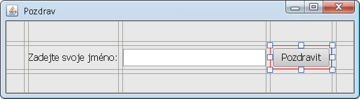

Úkol 05 - Ovládněte návrhář GUI
Domácí úkol
Cílem domácího úkolu je sžít se s nástrojem na návrh GUI (grafického uživatelského rozhraní) a se správcem rozložení MigLayout.
Část 1
Nejprve updatujte šablonu projektu Java Window App (Tu, kterou najdete v průvodci New -> Project -> User Defined -> Java Window App). V současnosti v ní totiž není MigLayout. I v současnosti se vás sice Návrhář GUI zeptá, jestli chcete knihovnu MigLayoutu do projektu přidat, ale bude jednodušší, když tam knihovna MigLayoutu bude od začátku.
Stáhněte si archív Java Window App.zip.
Ve správci souborů ("Tento počítač" nebo "Finder")
jděte do složky
C:\Java-Training\IntelliJ-Community\!User-Profile\config\projectTemplates
(na Windows) nebo
VÁŠ_PROFIL/Java-Training/IntelliJ-Community-Profile/config/projectTemplates
(na Macu).
Zde smažte starý soubor Java Window App.zip
a nahraďte jej staženým souborem.
Část 2
Dokončete návrh GUI aplikací z hodiny. Programu Pozdrav, Kalkulačky a Poznámkového bloku.
- 
Nezapomeňte vždy použít MigLayout a ověřte, že se při zvětšování a zmenšování okna komponenty správně zvětšují a zmenšují.
Pro okno změňte vlastnost
Size Policy z Design Size na
Preferred Size.
Okno pak bude tak velké, jak preferují jednotlivé
komponenty uvnitř (aby se všechny vešly na obrazovku).
Pojmenujte všechny vizuální komponenty.
Každá komponenta je uložena v třídě HlavniOkno
v nějaké proměnné. Je velice praktické mít
tyto proměnné pojmenované tak,
aby se v tom dalo vyznat.
- Původně:
- Nově:
Pro pojmenování budeme používat tzv. maďarskou notaci. Na začátku jména jsou 3 až 4 písmena charakterizující druh vizuální komponenty a potom teprve jméno. Např. pro aplikaci na obrázku by mohla být zvolena tato jména:
- labJmeno
- editJmeno
- btnPozdravit
Předpony pro komponenty:
| JLabel | lab |
| JTextField | edit |
| JButton | btn |
| JCheckBox | chk |
| JRadioButton | rad |
| JTextArea | txar |
| JList | list |
| JTable | tab |
| JTree | tree |
Předpony nejsou striktně vždy pojmenované takto, ale princip vždycky dodržujte a pokud budete používat jiné předpony (nebo přípony), buďte konzistentní. Nejhorší je komponenty vůbec nepřejmenovat.
Část 3
Navrhněte GUI pro další aplikace:
- Desktopová aplikace se 2 vstupními poli a 2 výsledky
- Šibenice
- Pozn: Pokud potřebujete, aby JTextField byl
velký zhruba na několik znaků,
vyplňte mu vlastnost
columnsna požadovaný počet znaků.
- Pozn: Pokud potřebujete, aby JTextField byl
velký zhruba na několik znaků,
vyplňte mu vlastnost
- Jakákoliv aplikace, co byste si chtěli naprogramovat
Nezapomeňte správně pojmenovat komponenty pomocí předpony a názvu.
Odevzdání domácího úkolu
Domácí úkol (složku s projekty)
zabalte pomocí 7-Zipu pod jménem Ukol05-Vase_Jmeno.7z.
(Případně lze použít prostý zip, například na Macu).
Takto vytvořený archív nahrajte na Google Drive
do složky Ukol05.
Vytvořte snímek obrazovky spuštěného programu a pochlubte se s ním v galerii na Facebooku.
Pokud byste chtěli odevzdat revizi úkolu (např. po opravě),
zabalte ji a nahrajte ji na stejný Google Drive znovu,
jen tentokrát se jménem Ukol05-Vase_Jmeno-verze2.7z